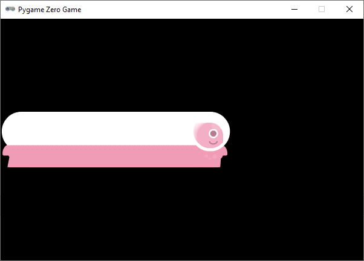
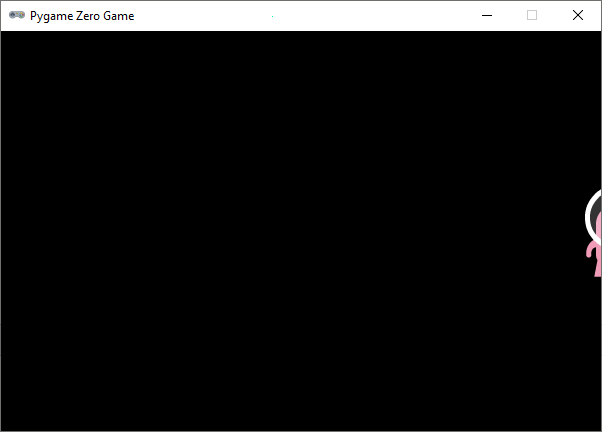
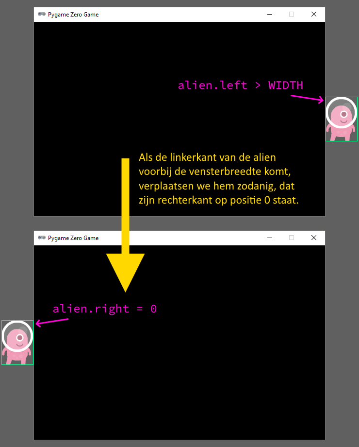
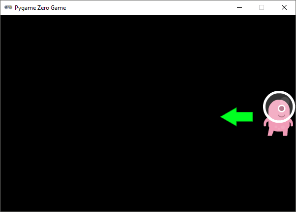
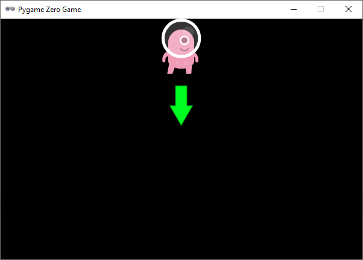
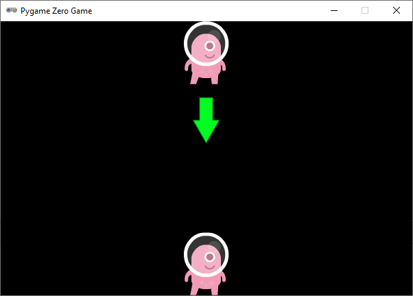

1.3. Beweging#
Tijd voor actie! Die statische alien mag wel eens in beweging komen. Om dat voor elkaar te krijgen, moet je aan je programma een update() functie toevoegen. Deze functie wordt door Pygame 60 keer per seconde aangeroepen. Laten we het meteen uitproberen:
update() functie zie je op regel 15 alien.x += 2. Dit is een kortere schrijfwijze voor alien.x = alien.x + 2. Het effect van deze regel is dat de alien 2 pixels naar rechts opschuift, elke keer wanneer de update() functie wordt aangeroepen.Bij het runnen van de code zie je dat er iets raars gebeurt:

De alien schuift inderdaad naar rechts, maar hij laat een flinke schaduw achter. Er wordt telkens een nieuwe alien over de oude getekend. Door een regel aan je draw() functie toe te voegen, los je dit op:
Dit ziet er al een stuk beter uit. Maar er is nog wel een probleem: de alien verdwijnt buiten beeld aan de rechterkant van het venster.

Dit gaan we oplossen met een if statement. Als de linkerzijde van de alien sprite voorbij de rechterzijde van het venster gaat, verplaatsen we de sprite terug naar links:
Door in regel 18 de rechterzijde van de alien op 0 te zetten, plaatsen we hem net buiten beeld aan de linkerkant van het venster.

Opdracht 01
Wijzig je programma zodat de alien aan de rechterkant van het venster begint en naar links beweegt in plaats van naar rechts. Zorg ervoor dat de alien weer op de goede plek verschijnt nadat hij buiten beeld is geraakt.

Hint
Om de alien naar links te laten bewegen hoef je in regel 16 slechts één teken aan te passen. Er moet nu telkens 2 pixels worden afgetrokken in plaats van opgeteld.
Oplossing
Opdracht 02
Wijzig je programma zodat de alien van boven naar beneden beweegt in plaats van horizontaal. Uiteraard moet hij weer verschijnen nadat hij uit beeld raakt.

Opdracht 03
Wijzig je programma zodat de alien van boven naar beneden beweegt, maar niet uit het venster verdwijnt. Zodra zijn voeten de onderkant raken, moet hij stoppen met bewegen. Als je opdracht 02 hebt gemaakt, hoef je hiervoor alleen maar regels 17 en 18 aan te passen.

Oplossing
1.3.1. Snelheid#
In regel 16 van alien.py verandert de positie van de alien 2 pixels door de instructie alien.left += 2 (of varianten daarvan). Om de alien sneller te laten bewegen, kun je een groter getal dan 2 nemen. Bijvoorbeeld alien.left += 5. Maar het is nog mooier om, in plaats van de verplaatsing te hardcoden met een getal in deze regel, een variabele te gebruiken voor de snelheid. We gaan hiervoor even terug naar de versie waarin de alien van links naar rechts beweegt:
1# Vensterafmetingen
2WIDTH = 600
3HEIGHT = 400
4
5# Roze alien Actor
6alien = Actor('alien_pink')
7alien.midleft = (0, HEIGHT / 2)
8alien.speed = 10
9
10# De draw() functie van de game
11def draw():
12 screen.clear()
13 alien.draw()
14
15# De update() functie van de game
16def update():
17 alien.x += alien.speed
18 if alien.left > WIDTH:
19 alien.right = 0
Je ziet dat regel 17 is gewijzigd naar alien.left += alien.speed (speed is het Engelse woord voor snelheid) en dat in regel 8 de variabele alien.speed de waarde 10 heeft gekregen. Om de snelheid van de alien te veranderen hoef je slechts het getal in regel 8 te wijzigen.
Opdracht 04
Test verschillende snelheden door het getal in regel 8 te wijzigen. Probeer ook eens een negatief getal in te vullen, bijvoorbeeld alien.speed = -4 en bekijk wat het gevolg is.
Nu we voor de snelheid een variabele gebruiken, kun je tijdens de uitvoering van het programma de snelheid nog veranderen. Voeg maar eens de volgende regel toe aan de update() functie:
Je kunt je alien ook steeds langzamer laten bewegen:
Maar dan zie je dat hij al snel de andere kant op gaat omdat de snelheid een negatief getal wordt. Als je dat niet wilt, zou je het zo kunnen doen:
De uitdrukking alien.speed *= 0.99 betekent alien.speed = alien.speed * 0.99. Daarmee zeg je dat de nieuwe snelheid telkens 99% van de oude snelheid moet zijn, waardoor de snelheid afneemt, maar nooit negatief wordt.
Opdracht 05
Verwijder regel 18 uit je code, zodat de snelheid weer constant blijft. Wijzig daarna je programma zodat de alien van links naar rechts beweegt, maar zodra hij de rechterkant van het venster raakt moet hij omkeren en met dezelfde snelheid weer naar links gaan.
Hint
Zodra de rechterkant van de alien de vensterrand raakt, moet hij omkeren. Dus het if statement in regel 18 moet worden aangepast. En wat moet er op regel 19 op de puntjes komen te staan?
Oplossing
Zodra de rechterkant van de alien de vensterrand raakt, moet de alien met dezelfde snelheid de andere kant op gaan. Dat doe je door de snelheid negatief te maken. Als de snelheid eerst 10 was, moet hij -10 worden. In de onderstaande code gebeurt dat op regel 19.
Opdracht 06
Als je opdracht 04 hebt gemaakt, is deze opdracht een koud kunstje. In opdracht 04 verdween de alien na het omkeren aan de linkerkant uit het scherm. Zorg ervoor dat dat niet gebeurt: de alien moet heen en weer bewegen in het venster.
Hint
Je hoeft alleen regel 18 te wijzigen. Die regel moet gaan zeggen: ‘Als de rechterkant van de alien voorbij de rechterkant van het venster komt OF als de linkerkant van de alien voorbij de linkerkant van het venster komt dan…’. Je hebt dus het or keyword nodig.
Oplossing
Als de snelheid negatief was, zorgt de regel alien.speed = -alien.speed ervoor dat hij weer positief wordt, want ‘min min is plus’.